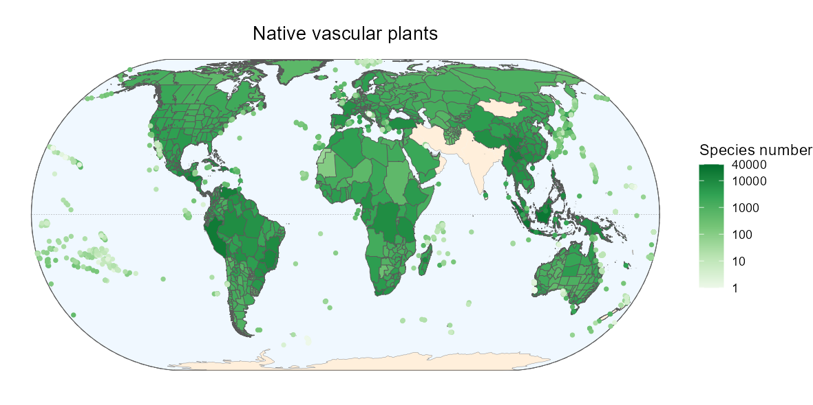

This R package includes several functions to extract data from the Global Inventory of Floras and Traits (GIFT) database.
GIFT is a global database of plant checklists, covering several taxonomic groups and providing information about the floristic status and functional traits of plants as well as environmental information for each checklist.
More details about the content of this database are available in the publication of Weigelt et al., (2020).

⏬ Installation
The package is not on CRAN yet and is still under active development. You can install the development version from the GitHub repository with the following command:
📜 Vignettes
We wrote several vignettes that will help you using the GIFT R package. So far, three vignettes are available:
Alternatively, if you prefer to view the vignettes in R, you could install the package with build_vignettes = TRUE. But be aware that some vignettes are very slow to generate (the main one especially).
remotes::install_github("https://github.com/BioGeoMacro/GIFT",
dependencies = TRUE, upgrade = "ask",
build_vignettes = TRUE)
vignette("GIFT")🖥️ Functions
An overview of all functions and data is given here.
🐛 Find a bug?
Thank you for finding it. Head over to the GitHub Issues tab and let us know about it. Alternatively, you can also send us an e-mail. We will try to get to it as soon as we can!
References and dependencies
GIFT depends on dplyr, jsonlite, purrr, sf, stats, tidyr and utils.
Weigelt, P., König, C. & Kreft, H. (2020) GIFT – A Global Inventory of Floras and Traits for macroecology and biogeography. Journal of Biogeography, https://doi.org/10.1111/jbi.13623.